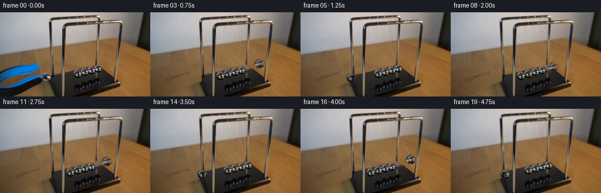
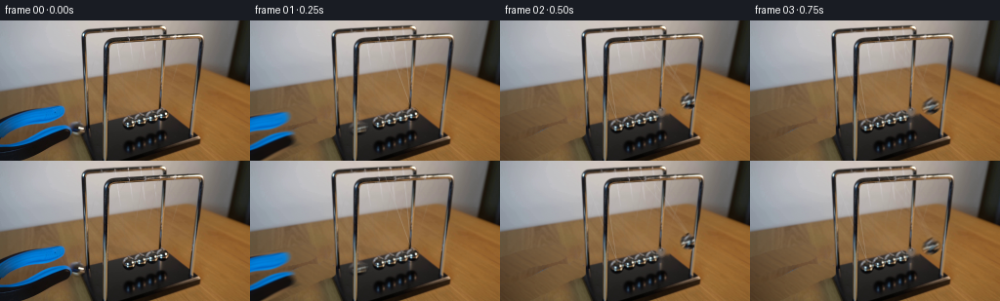

CODING AGENTS AS PIXEL WORLD MODELS
traex/GPT-6.1-Sol · 0160
点击播放 · 原生 RGB 像素
逐轮保存的候选
回放视频、检查图与代码变化。
每份候选均可单独播放。实际图片检查记录在下方工具轨迹中。
候选 01播放与检查图
点击播放 · 原生 RGB 像素


展开代码变化
--- 上一保存版本
+++ 本次保存版本
@@ -0,0 +1,187 @@
+from pathlib import Path
+import numpy as np
+import cv2
+from PIL import Image
+from scipy.ndimage import gaussian_filter
+import artifact_io
+
+ROOT=Path(__file__).resolve().parent
+S=4
+H,W=144,256
+im=np.array(Image.open(ROOT/'first_frame.png').convert('RGB'))
+yy,xx=np.mgrid[:H,:W]
+
+def polygon(points):
+ a=np.zeros((H,W),np.uint8)
+ cv2.fillPoly(a,[np.array(points,np.int32)],255)
+ return a.astype(float)/255
+
+def disc(cx,cy,r,soft=.6):
+ return np.clip((r-np.hypot(xx-cx,yy-cy))/soft+.5,0,1)
+
+upper=polygon([(0,99),(26,91),(47,87),(59,86),(64,86),(67,89),(68,94),(66,99),(58,103),(45,106),(30,109),(17,114),(6,120),(0,123)])
+lower=polygon([(0,127),(12,125),(25,121),(37,116),(48,110),(60,106),(68,106),(75,108),(80,111),(82,115),(78,120),(68,124),(57,130),(45,136),(32,142),(25,144),(0,144)])
+held=disc(79.6,110.5,9.6,.8)
+tool=np.maximum(upper,lower)*(1-held)
+remove=np.maximum(np.maximum(upper,lower),held)
+# Restore the warm, lightly grained tabletop exposed when the gripper retreats.
+a=im.astype(float)
+r,g,b=a.transpose(2,0,1)
+wood=(r-g>20)&(g-b>19)&(yy>76)&(((xx<83)&(remove<.01))|((xx>211))|((yy<88)&(xx<159)))
+# Robust smooth illumination fitted only to the original wood.
+x=(xx-120)/120.; y=(yy-110)/40.
+F=np.stack([np.ones_like(x),x,y,x*x,x*y,y*y,x*x*x,x*x*y],-1)
+A=F[wood]; C=a[wood]
+w=np.ones(len(A))
+for k in range(4):
+ coeff=np.linalg.lstsq(A*w[:,None],C*w[:,None],rcond=None)[0]
+ resid=np.sqrt(np.mean((A@coeff-C)**2,axis=1))
+ w=np.minimum(1,8/(resid+.001))
+woodbg=F@coeff
+# A sample of the real table's grain, without its lighting gradient.
+tex=a[76:144,211:256]
+tex=tex-gaussian_filter(tex,(3,3,0))
+texture=tex[np.clip(yy-76,0,67),np.mod(xx+9,45)]
+woodbg+=texture*.72
+# Stationary soft shadow of the cradle at its left foot.
+shadow=np.exp(-((xx-91)/18.)**2)*np.clip((yy-102)/20.,0,1)*.16
+woodbg*=1-shadow[...,None]
+# Native post pixels are retained and also used as the foreground occlusion layer.
+post=np.zeros((H,W),float)
+post[23:144,106:110]=1
+post[16:108,85:89]=1
+post[108:144,88:93]=1
+post[21:92,164:168]=1
+post[27:124,199:203]=1
+remove*=1-post
+remove=gaussian_filter(remove,.42)
+background=a*(1-remove[...,None])+woodbg*remove[...,None]
+background=np.clip(background,0,255)
+# The far end sphere must leave its old position, revealing table and the edge
+# of the neighboring sphere. All central spheres remain completely at rest.
+rc=np.array([164.7,96.1]); rr=8.35
+rightmask=disc(*rc,rr+.35,.9)
+rightmask*=1-post
+hole=(rightmask>.02).astype(np.uint8)*255
+filled=cv2.inpaint(np.uint8(background),hole,3,cv2.INPAINT_TELEA).astype(float)
+# Reconstitute the small occluded part of its immediate neighbor using the
+# original chrome reflection texture from the next sphere in the row.
+mapx=(xx-(154.0-131.5)).astype(np.float32)
+mapy=(yy-(99.0-104.4)).astype(np.float32)
+neighbor=cv2.remap(im,mapx,mapy,cv2.INTER_CUBIC,borderMode=cv2.BORDER_REFLECT).astype(float)
+na=disc(154.,99.,7.95,.7)*rightmask
+filled=filled*(1-na[...,None])+neighbor*na[...,None]
+base=background*(1-rightmask[...,None])+filled*rightmask[...,None]
+
+# Strings of the displaced far sphere are faint nylon. Delete their old
+# narrow paths, leaving the three central pairs and rigid chrome frame intact.
+cordmask=np.zeros((H,W),np.uint8)
+cv2.line(cordmask,(158,23),(164,89),255,1)
+cv2.line(cordmask,(135,10),(163,88),255,1)
+cordmask[:24]=0
+cordmask=(cordmask.astype(float)/255)*.35*(1-post)
+cordmask[yy>87]=0
+cordclean=cv2.medianBlur(np.uint8(base),3).astype(float)
+base=base*(1-cordmask[...,None])+cordclean*cordmask[...,None]
+
+# Fourfold compositing gives subpixel strings, sphere contours and motion.
+def up(a):
+ return cv2.resize(a.astype(np.float32),(W*S,H*S),interpolation=cv2.INTER_CUBIC)
+basehi=up(base)
+orig_hi=up(a)
+ph=up(post)
+ph=np.clip(ph,0,1)
+toolalpha=np.clip(up(gaussian_filter(tool,.35)),0,1)
+UH,VH=np.meshgrid((np.arange(W*S)+.5)/S-.5,(np.arange(H*S)+.5)/S-.5)
+
+# Reflection-preserving photographic sphere sprites, with a smooth circular
+# silhouette rather than translating a rectangular image patch.
+def sphere(img,cx,cy,radius,source=(131.5,104.4),sr=7.95):
+ d=np.hypot(UH-cx,VH-cy)
+ alpha=np.clip((radius-d)*S+.5,0,1)
+ mx=(source[0]+(UH-cx)*sr/radius).astype(np.float32)
+ my=(source[1]+(VH-cy)*sr/radius).astype(np.float32)
+ rgb=cv2.remap(im,mx,my,cv2.INTER_CUBIC,borderMode=cv2.BORDER_REFLECT).astype(np.float32)
+ # Narrow dark chrome rim supplies a consistent spherical silhouette.
+ edge=np.clip((d/radius-.86)/.14,0,1)*.23
+ rgb*=1-edge[...,None]
+ return img*(1-alpha[...,None])+rgb*alpha[...,None]
+
+def nylon(img,pivot,center,alpha=.30):
+ # Cords end at the metal eyelet, not the center of the ball.
+ end=(center[0],center[1]-6.4)
+ ax,ay=pivot; bx,by=end
+ dx,dy=bx-ax,by-ay
+ u=np.clip(((UH-ax)*dx+(VH-ay)*dy)/(dx*dx+dy*dy),0,1)
+ dist=np.hypot(UH-ax-u*dx,VH-ay-u*dy)
+ m=np.clip((.39-dist)*S+.5,0,1)*alpha
+ # Nylon highlights are subtle against both wall and wooden table.
+ col=np.array([205.,206.,202.],np.float32)
+ return img*(1-m[...,None])+col*m[...,None]
+
+# Continuous nonlinear pendulum dynamics; at the bottom the incoming end
+# transfers its velocity to the opposite end, leaving the middle three still.
+dt=.0005
+N=int(5.1/dt)+2
+th=np.empty(N);th[0]=-.420
+velocity=0.
+omega=5.42
+for k in range(1,N):
+ velocity+=(-omega*omega*np.sin(th[k-1])-.095*velocity)*dt
+ th[k]=th[k-1]+velocity*dt
+ if th[k]*th[k-1]<0: velocity*=.991
+
+def pose(t):
+ theta=np.interp(max(0,t),np.arange(N)*dt,th)
+ left=min(theta,0.);right=max(theta,0.)
+ grav=np.array([24.,92.]); direction=np.array([91.,-26.])
+ lc=np.array([119.,108.])+grav*(np.cos(left)-1)+direction*np.sin(left)
+ cc=rc+grav*.92*(np.cos(right)-1)+direction*.92*np.sin(right)
+ return lc,cc
+
+def sample(t):
+ img=basehi.copy()
+ lc,cc=pose(t)
+ # Light glancing shadows stay on the tabletop, not attached to the balls.
+ # The base obscures most of these in the original perspective.
+ ls=np.exp(-((UH-lc[0]-3)/8.5)**2-((VH-(lc[1]+11))/2.4)**2)*.065
+ ls*=np.clip((105-UH)/16,0,1)
+ img*=1-ls[...,None]
+ for p in [(84.,11.),(107.,22.)]:img=nylon(img,p,lc,.23)
+ for p in [(136.,10.),(158.,22.)]:img=nylon(img,p,cc,.25)
+ img=sphere(img,*lc,8.05)
+ img=sphere(img,*cc,rr,source=tuple(rc),sr=rr)
+ # Posts are closer to the camera than the strings and swinging balls.
+ img=img*(1-ph[...,None])+orig_hi*ph[...,None]
+ # Release followed by a controlled withdrawal down and left. No new
+ # objects enter, and the photographic grabber shape is preserved.
+ q=np.clip((t-.015)/.70,0,1)
+ shift=102*(q*q*(3-2*q)); down=25*(q*q*(3-2*q))
+ if shift<100:
+ M=np.float32([[1,0,-shift*S],[0,1,down*S]])
+ ta=cv2.warpAffine(toolalpha,M,(W*S,H*S),flags=cv2.INTER_LINEAR,borderMode=cv2.BORDER_CONSTANT)
+ premul=cv2.warpAffine(orig_hi*toolalpha[...,None],M,(W*S,H*S),flags=cv2.INTER_LINEAR,borderMode=cv2.BORDER_CONSTANT)
+ img=img*(1-ta[...,None])+premul
+ return img
+
+frames=[im.copy()]
+for i in range(1,20):
+ t=i/4.
+ # A short real-camera exposure avoids stroboscopic razor-sharp balls.
+ rendered=sum(sample(t+d) for d in [-.016,-.008,0,.008,.016])/5
+ out=cv2.resize(rendered,(W,H),interpolation=cv2.INTER_AREA)
+ # Keep every truly unaffected camera pixel bit-exact, avoiding any global
+ # filtering of the original photographic environment.
+ affected=(remove>.001)|(rightmask>.001)|(cordmask>.001)
+ affected|=(yy>7)&(yy<121)&(xx>72)&(xx<210)
+ affected|=(yy>85)&(xx<84)
+ out=np.clip(np.round(out),0,255).astype(np.uint8)
+ out[~affected]=im[~affected]
+ frames.append(out)
+frames=np.stack(frames)
+artifact_io.save(frames,ROOT)
+Image.fromarray(np.uint8(np.clip(background,0,255))).save(ROOT/'.tmp/background.png')
+Image.fromarray(np.uint8(np.clip(base,0,255))).save(ROOT/'.tmp/base.png')
+print('Saved',frames.shape,frames.dtype)
+for i in range(20):
+ print(i,tuple(np.round(pose(i/4)[0],2)),tuple(np.round(pose(i/4)[1],2)))
候选 02播放与检查图
点击播放 · 原生 RGB 像素
展开代码变化
--- 上一保存版本
+++ 本次保存版本
@@ -88,6 +88,7 @@
def up(a):
return cv2.resize(a.astype(np.float32),(W*S,H*S),interpolation=cv2.INTER_CUBIC)
basehi=up(base)
+right_restore=up(background-base)
orig_hi=up(a)
ph=up(post)
ph=np.clip(ph,0,1)
@@ -148,9 +149,14 @@
ls*=np.clip((105-UH)/16,0,1)
img*=1-ls[...,None]
for p in [(84.,11.),(107.,22.)]:img=nylon(img,p,lc,.23)
- for p in [(136.,10.),(158.,22.)]:img=nylon(img,p,cc,.25)
+ rightmoving=np.linalg.norm(cc-rc)>.0001
+ if rightmoving:
+ for p in [(136.,10.),(158.,22.)]:img=nylon(img,p,cc,.25)
img=sphere(img,*lc,8.05)
- img=sphere(img,*cc,rr,source=tuple(rc),sr=rr)
+ if rightmoving:
+ img=sphere(img,*cc,rr,source=tuple(rc),sr=rr)
+ else:
+ img+=right_restore
# Posts are closer to the camera than the strings and swinging balls.
img=img*(1-ph[...,None])+orig_hi*ph[...,None]
# Release followed by a controlled withdrawal down and left. No new
@@ -169,7 +175,7 @@
t=i/4.
# A short real-camera exposure avoids stroboscopic razor-sharp balls.
rendered=sum(sample(t+d) for d in [-.016,-.008,0,.008,.016])/5
- out=cv2.resize(rendered,(W,H),interpolation=cv2.INTER_AREA)
+ out=base+cv2.resize(rendered-basehi,(W,H),interpolation=cv2.INTER_AREA)
# Keep every truly unaffected camera pixel bit-exact, avoiding any global
# filtering of the original photographic environment.
affected=(remove>.001)|(rightmask>.001)|(cordmask>.001)
可观测工具轨迹
实际执行的命令与返回图片。
命令 1exit 0
/bin/bash -lc 'ls -la; cat prompt.txt; cat GENERATION_RULES.md'
命令 2exit 0
/bin/bash -lc "cat artifact_io.py; python - <<'PY'
from PIL import Image
import numpy as np
im=np.array(Image.open('first_frame.png'))
print(im.shape)
for y in range(0,144,4):
print(f'{y:3}', ''.join(' .:-=+*#%@'[min(9,int(v)//26)] for v in np.mean(im[y:y+4].reshape(4,64,4,3),axis=(0,2,3))))
print('colors')
from collections import Counter
print(Counter(map(tuple,im.reshape(-1,3))).most_common(20))
PY"命令 3exit 0
/bin/bash -lc "python - <<'PY'
from PIL import Image
import numpy as np
im=np.array(Image.open('first_frame.png')).astype(float)
# Color class map 2x2 samples. K: dark; B: blue; W: bright; r: wood; gray magnitude.
for y in range(0,144,2):
s=''
for x in range(0,256,2):
r,g,b=np.mean(im[y:y+2,x:x+2],axis=(0,1)); v=(r+g+b)/3
if b>r*1.3 and b>g*1.08: c='B' if v>50 else 'b'
elif r>g*1.22 and g>b*1.22:c='w' if v>90 else 'r'
elif v<25:c='@'
elif v<45:c='#'
elif v<65:c='O'
elif v<90:c='o'
elif v<115:c=':'
elif v<145:c='-'
elif v<170:c='='
elif v<200:c='+'
elif v<225:c='*'
else:c='.'
s+=c
print(f'{y:03} {s}')
PY"命令 4exit 0
/bin/bash -lc "python - <<'PY'
from PIL import Image
import numpy as np
im=np.array(Image.open('first_frame.png'))
# detailed cradle balls and tool
for y in range(87,121):
s=''
for x in range(60,185):
r,g,b=map(int,im[y,x]); v=(r+g+b)/3
if b>r*1.3 and b>g*1.08:c='B' if v>50 else 'b'
elif r>g*1.22 and g>b*1.22:c='w' if v>90 else 'r'
else:c='@#Oo:-=+*.'[min(9,int(v)//26)]
s+=c
print(f'{y:3} {s}')
print('x ticks',list(range(60,185,5)))
# brightest spots
for y in range(90,115):
pts=[(x,tuple(im[y,x])) for x in range(65,175) if min(im[y,x])>130]
print(y,pts)
PY"命令 5exit 0
/bin/bash -lc "python - <<'PY'
from PIL import Image
import numpy as np
im=np.array(Image.open('first_frame.png')).astype(float)
# identify thin cords deviations, median along x
from scipy.ndimage import median_filter
for bounds in [(90,200,24,90),(68,181,89,115)]:
x0,x1,y0,y1=bounds
a=im[y0:y1,x0:x1]; med=median_filter(a,size=(1,9,1));d=np.mean(a-med,axis=-1)
print('CORD DEVIATIONS',bounds)
for iy,row in enumerate(d):
if bounds[2]==24 and iy%2:continue
print(f'{iy+y0:3}', ''.join('â' if v<-40 else 'X' if v<-22 else 'x' if v<-11 else ':' if v<-4 else '+' if v>20 else '.' if v>5 else ' ' for v in row))
PY"命令 6exit 0
/bin/bash -lc "python - <<'PY'
from PIL import Image
import numpy as np
im=np.array(Image.open('first_frame.png'))
# ball crop, individual grayscale pixel mapping as digits (base 16)
for y in range(88,113):
print('%3d'%y, ''.join('0123456789ABCDEF'[min(15,int(np.mean(im[y,x]))//16)] for x in range(119,177)))
print(' '+''.join(str(x//10%10) for x in range(119,177)))
print(' '+''.join(str(x%10) for x in range(119,177)))
# extract value coords at upper cables
for y in [22,30,40,50,60,70,80]:
print(y,[(x,tuple(map(int,im[y,x]))) for x in range(115,195)])
PY"命令 7exit 0
/bin/bash -lc "python - <<'PY'
import cv2
import numpy as np
from PIL import Image
im=np.array(Image.open('first_frame.png')); r,g,b=im.transpose(2,0,1).astype(float)
m=((b-r>20)&(b-g>6)&(np.indices(r.shape)[0]>83)&(np.indices(r.shape)[1]<90)).astype('uint8')
n,l,st,c=cv2.connectedComponentsWithStats(m)
print([(i,st[i].tolist(),c[i].tolist()) for i in range(1,n) if st[i,4]>10])
for y in range(84,144):
xs=np.where(m[y])[0]
if len(xs): print(y,[(a[0],a[-1]) for a in np.split(xs,np.where(np.diff(xs)>1)[0]+1)])
PY"命令 8exit 0
/bin/bash -lc "python - <<'PY'
from PIL import Image
import numpy as np
im=np.array(Image.open('first_frame.png'))
for y in range(100,121):
print(f'{y:3}', ''.join('0123456789ABCDEF'[min(15,int(np.mean(im[y,x]))//16)] for x in range(62,95)))
print(' '+''.join(str(x//10%10) for x in range(62,95)));print(' '+''.join(str(x%10) for x in range(62,95)))
# gentle chromatic printed ball data
for y in range(24,105,5):
# white thin string pixels against smooth local median
from scipy.ndimage import median_filter
row=im[y].astype(float);d=row-median_filter(row,size=(7,1))
cand=np.where(d.mean(axis=1)>2.5)[0]
print(y,[(int(x),tuple(map(int,row[x])),round(float(d.mean(axis=1)[x]),1)) for x in cand if 85<x<175])
PY"命令 9exit 0
/bin/bash -lc "python - <<'PY'
import cv2
import numpy as np
im=cv2.imread('first_frame.png');gray=cv2.cvtColor(im,cv2.COLOR_BGR2GRAY)
for p2 in [6,8,10,12,14]:
c=cv2.HoughCircles(gray,cv2.HOUGH_GRADIENT,1,minDist=8,param1=50,param2=p2,minRadius=6,maxRadius=11)
print(p2,None if c is None else [np.round(v,2).tolist() for v in c[0] if 70<v[0]<180 and 85<v[1]<120])
for y in range(89,112):
print(y,' '.join('%02x'%int(gray[y,x]) for x in range(122,175)))
PY"命令 10exit 0
/bin/bash -lc "python - <<'PY'
from PIL import Image
import numpy as np
im=np.array(Image.open('first_frame.png')).astype(float)
for y in range(83,144):
s=''
for x in range(0,105):
r,g,b=im[y,x];v=(r+g+b)/3
if b-r>20 and b-g>6:c='B'
elif r-g>20 and g-b>18:c='w' if v>85 else 'r'
elif v<26:c='@'
elif v<46:c='#'
elif v<66:c='O'
elif v<86:c='o'
elif v<110:c=':'
elif v<140:c='-'
elif v<170:c='='
elif v<210:c='+'
else:c='*'
s+=c
print(f'{y:3} {s}')
PY"命令 11exit 0
/bin/bash -lc "python - <<'PY'
import numpy as np
from PIL import Image
from scipy.ndimage import median_filter
im=np.array(Image.open('first_frame.png')).astype(float)
for y in range(20,105):
a=im[y];d=np.mean(a-median_filter(a,size=(7,1)),axis=1)
print('%03d'%y,''.join('X' if d[x]<-15 else 'x' if d[x]<-6 else '+' if d[x]>6 else ':' if d[x]>2 else '.' if d[x]<-2 else ' ' for x in range(76,111)))
PY"命令 12exit 0
/bin/bash -lc "python - <<'PY'
from PIL import Image
import numpy as np
from scipy.ndimage import median_filter, gaussian_filter
im=np.array(Image.open('first_frame.png')).astype(float); d=(im-median_filter(im,size=(1,9,1))).mean(axis=2)
for endx in [77,80,83]:
a=[]
for sx in np.arange(78,125,.5):
ys=np.arange(25,84); xs=np.round(sx+(endx-sx)*(ys-18)/(104-18)).astype(int)
ok=(abs(xs-(85+.04*ys))>3)&(abs(xs-108)>4)
vals=d[ys[ok],xs[ok]]
if len(vals)>20:a.append((round(abs(vals.mean()),2),round(vals.mean(),2),sx))
print(endx, sorted(a,reverse=True)[:12])
# detect tool boundary illumination baseline sample
for y in [88,95,105,115,125,135,143]:
print(y, [(x,tuple(map(int,im[y,x]))) for x in [0,20,40,60,68,72,76,80,84,90,94,100,112,120,190,220]])
PY"命令 13exit 0
/bin/bash -lc "cat > generate.py <<'PY'
from pathlib import Path
import numpy as np
import cv2
from PIL import Image
from scipy.ndimage import gaussian_filter
import artifact_io
ROOT=Path(__file__).resolve().parent
S=4
H,W=144,256
im=np.array(Image.open(ROOT/'first_frame.png').convert('RGB'))
yy,xx=np.mgrid[:H,:W]
def polygon(points):
a=np.zeros((H,W),np.uint8)
cv2.fillPoly(a,[np.array(points,np.int32)],255)
return a.astype(float)/255
def disc(cx,cy,r,soft=.6):
return np.clip((r-np.hypot(xx-cx,yy-cy))/soft+.5,0,1)
upper=polygon([(0,99),(26,91),(47,87),(59,86),(64,86),(67,89),(68,94),(66,99),(58,103),(45,106),(30,109),(17,114),(6,120),(0,123)])
lower=polygon([(0,127),(12,125),(25,121),(37,116),(48,110),(60,106),(68,106),(75,108),(80,111),(82,115),(78,120),(68,124),(57,130),(45,136),(32,142),(25,144),(0,144)])
held=disc(79.6,110.5,9.6,.8)
tool=np.maximum(upper,lower)*(1-held)
remove=np.maximum(np.maximum(upper,lower),held)
# Restore the warm, lightly grained tabletop exposed when the gripper retreats.
a=im.astype(float)
r,g,b=a.transpose(2,0,1)
wood=(r-g>20)&(g-b>19)&(yy>76)&(((xx<83)&(remove<.01))|((xx>211))|((yy<88)&(xx<159)))
# Robust smooth illumination fitted only to the original wood.
x=(xx-120)/120.; y=(yy-110)/40.
F=np.stack([np.ones_like(x),x,y,x*x,x*y,y*y,x*x*x,x*x*y],-1)
A=F[wood]; C=a[wood]
w=np.ones(len(A))
for k in range(4):
coeff=np.linalg.lstsq(A*w[:,None],C*w[:,None],rcond=None)[0]
resid=np.sqrt(np.mean((A@coeff-C)**2,axis=1))
w=np.minimum(1,8/(resid+.001))
woodbg=F@coeff
# A sample of the real table's grain, without its lighting gradient.
tex=a[76:144,211:256]
tex=tex-gaussian_filter(tex,(3,3,0))
texture=tex[np.clip(yy-76,0,67),np.mod(xx+9,45)]
woodbg+=texture*.72
# Stationary soft shadow of the cradle at its left foot.
shadow=np.exp(-((xx-91)/18.)**2)*np.clip((yy-102)/20.,0,1)*.16
woodbg*=1-shadow[...,None]
# Native post pixels are retained and also used as the foreground occlusion layer.
post=np.zeros((H,W),float)
post[23:144,106:110]=1
post[16:108,85:89]=1
post[108:144,88:93]=1
post[21:92,164:168]=1
post[27:124,199:203]=1
remove*=1-post
remove=gaussian_filter(remove,.42)
background=a*(1-remove[...,None])+woodbg*remove[...,None]
background=np.clip(background,0,255)
# The far end sphere must leave its old position, revealing table and the edge
# of the neighboring sphere. All central spheres remain completely at rest.
rc=np.array([164.7,96.1]); rr=8.35
rightmask=disc(*rc,rr+.35,.9)
rightmask*=1-post
hole=(rightmask>.02).astype(np.uint8)*255
filled=cv2.inpaint(np.uint8(background),hole,3,cv2.INPAINT_TELEA).astype(float)
# Reconstitute the small occluded part of its immediate neighbor using the
# original chrome reflection texture from the next sphere in the row.
mapx=(xx-(154.0-131.5)).astype(np.float32)
mapy=(yy-(99.0-104.4)).astype(np.float32)
neighbor=cv2.remap(im,mapx,mapy,cv2.INTER_CUBIC,borderMode=cv2.BORDER_REFLECT).astype(float)
na=disc(154.,99.,7.95,.7)*rightmask
filled=filled*(1-na[...,None])+neighbor*na[...,None]
base=background*(1-rightmask[...,None])+filled*rightmask[...,None]
# Strings of the displaced far sphere are faint nylon. Delete their old
# narrow paths, leaving the three central pairs and rigid chrome frame intact.
cordmask=np.zeros((H,W),np.uint8)
cv2.line(cordmask,(158,23),(164,89),255,1)
cv2.line(cordmask,(135,10),(163,88),255,1)
cordmask[:24]=0
cordmask=(cordmask.astype(float)/255)*.35*(1-post)
cordmask[yy>87]=0
cordclean=cv2.medianBlur(np.uint8(base),3).astype(float)
base=base*(1-cordmask[...,None])+cordclean*cordmask[...,None]
# Fourfold compositing gives subpixel strings, sphere contours and motion.
def up(a):
return cv2.resize(a.astype(np.float32),(W*S,H*S),interpolation=cv2.INTER_CUBIC)
basehi=up(base)
orig_hi=up(a)
ph=up(post)
ph=np.clip(ph,0,1)
toolalpha=np.clip(up(gaussian_filter(tool,.35)),0,1)
UH,VH=np.meshgrid((np.arange(W*S)+.5)/S-.5,(np.arange(H*S)+.5)/S-.5)
# Reflection-preserving photographic sphere sprites, with a smooth circular
# silhouette rather than translating a rectangular image patch.
def sphere(img,cx,cy,radius,source=(131.5,104.4),sr=7.95):
d=np.hypot(UH-cx,VH-cy)
alpha=np.clip((radius-d)*S+.5,0,1)
mx=(source[0]+(UH-cx)*sr/radius).astype(np.float32)
my=(source[1]+(VH-cy)*sr/radius).astype(np.float32)
rgb=cv2.remap(im,mx,my,cv2.INTER_CUBIC,borderMode=cv2.BORDER_REFLECT).astype(np.float32)
# Narrow dark chrome rim supplies a consistent spherical silhouette.
edge=np.clip((d/radius-.86)/.14,0,1)*.23
rgb*=1-edge[...,None]
return img*(1-alpha[...,None])+rgb*alpha[...,None]
def nylon(img,pivot,center,alpha=.30):
# Cords end at the metal eyelet, not the center of the ball.
end=(center[0],center[1]-6.4)
ax,ay=pivot; bx,by=end
dx,dy=bx-ax,by-ay
u=np.clip(((UH-ax)*dx+(VH-ay)*dy)/(dx*dx+dy*dy),0,1)
dist=np.hypot(UH-ax-u*dx,VH-ay-u*dy)
m=np.clip((.39-dist)*S+.5,0,1)*alpha
# Nylon highlights are subtle against both wall and wooden table.
col=np.array([205.,206.,202.],np.float32)
return img*(1-m[...,None])+col*m[...,None]
# Continuous nonlinear pendulum dynamics; at the bottom the incoming end
# transfers its velocity to the opposite end, leaving the middle three still.
dt=.0005
N=int(5.1/dt)+2
th=np.empty(N);th[0]=-.420
velocity=0.
omega=5.42
for k in range(1,N):
velocity+=(-omega*omega*np.sin(th[k-1])-.095*velocity)*dt
th[k]=th[k-1]+velocity*dt
if th[k]*th[k-1]<0: velocity*=.991
def pose(t):
theta=np.interp(max(0,t),np.arange(N)*dt,th)
left=min(theta,0.);right=max(theta,0.)
grav=np.array([24.,92.]); direction=np.array([91.,-26.])
lc=np.array([119.,108.])+grav*(np.cos(left)-1)+direction*np.sin(left)
cc=rc+grav*.92*(np.cos(right)-1)+direction*.92*np.sin(right)
return lc,cc
def sample(t):
img=basehi.copy()
lc,cc=pose(t)
# Light glancing shadows stay on the tabletop, not attached to the balls.
# The base obscures most of these in the original perspective.
ls=np.exp(-((UH-lc[0]-3)/8.5)**2-((VH-(lc[1]+11))/2.4)**2)*.065
ls*=np.clip((105-UH)/16,0,1)
img*=1-ls[...,None]
for p in [(84.,11.),(107.,22.)]:img=nylon(img,p,lc,.23)
for p in [(136.,10.),(158.,22.)]:img=nylon(img,p,cc,.25)
img=sphere(img,*lc,8.05)
img=sphere(img,*cc,rr,source=tuple(rc),sr=rr)
# Posts are closer to the camera than the strings and swinging balls.
img=img*(1-ph[...,None])+orig_hi*ph[...,None]
# Release followed by a controlled withdrawal down and left. No new
# objects enter, and the photographic grabber shape is preserved.
q=np.clip((t-.015)/.70,0,1)
shift=102*(q*q*(3-2*q)); down=25*(q*q*(3-2*q))
if shift<100:
M=np.float32([[1,0,-shift*S],[0,1,down*S]])
ta=cv2.warpAffine(toolalpha,M,(W*S,H*S),flags=cv2.INTER_LINEAR,borderMode=cv2.BORDER_CONSTANT)
premul=cv2.warpAffine(orig_hi*toolalpha[...,None],M,(W*S,H*S),flags=cv2.INTER_LINEAR,borderMode=cv2.BORDER_CONSTANT)
img=img*(1-ta[...,None])+premul
return img
frames=[im.copy()]
for i in range(1,20):
t=i/4.
# A short real-camera exposure avoids stroboscopic razor-sharp balls.
rendered=sum(sample(t+d) for d in [-.016,-.008,0,.008,.016])/5
out=cv2.resize(rendered,(W,H),interpolation=cv2.INTER_AREA)
# Keep every truly unaffected camera pixel bit-exact, avoiding any global
# filtering of the original photographic environment.
affected=(remove>.001)|(rightmask>.001)|(cordmask>.001)
affected|=(yy>7)&(yy<121)&(xx>72)&(xx<210)
affected|=(yy>85)&(xx<84)
out=np.clip(np.round(out),0,255).astype(np.uint8)
out[~affected]=im[~affected]
frames.append(out)
frames=np.stack(frames)
artifact_io.save(frames,ROOT)
Image.fromarray(np.uint8(np.clip(background,0,255))).save(ROOT/'.tmp/background.png')
Image.fromarray(np.uint8(np.clip(base,0,255))).save(ROOT/'.tmp/base.png')
print('Saved',frames.shape,frames.dtype)
for i in range(20):
print(i,tuple(np.round(pose(i/4)[0],2)),tuple(np.round(pose(i/4)[1],2)))
PY
OPENBLAS_NUM_THREADS=1 python generate.py"命令 14exit 0
/bin/bash -lc "python - <<'PY'
import numpy as np
from PIL import Image
im=np.array(Image.open('first_frame.png')); bg=np.array(Image.open('.tmp/background.png')); b=np.array(Image.open('.tmp/base.png')); f=np.array(Image.open('frames/01.png'))
for a,name in [(bg,'background'),(f,'frame1')]:
print(name)
for y in [87,95,105,115,125,135,143]:
print(y,[(x,tuple(a[y,x])) for x in [0,20,40,60,68,72,76,80,84,90,94,100,112,120,190]])
print('GRAYSCALE')
for y in range(88,144,2):
print(y,''.join(' .:-=+*#%@'[min(9,int(v)//26)] for v in a[y,:112].mean(axis=1)))
print('untouched count',np.count_nonzero(np.any(f"'!=im,axis=2)))
for i in [0,1,2,4,5,10,14,19]:
a=np.array(Image.open('"'frames/%02d.png'%i));print(i,'total',a.mean(),'delta',np.mean(abs(a.astype(float)-im)))
PY"命令 15exit 0
/bin/bash -lc "OPENBLAS_NUM_THREADS=1 python generate.py > .tmp/generation.log; python - <<'PY'
import numpy as np
from PIL import Image
from pathlib import Path
p=np.load('pixels.npz')['pixels']
a=np.array(Image.open('first_frame.png')).astype('uint32')
first=(a[:,:,0]<<16)|(a[:,:,1]<<8)|a[:,:,2]
assert p.shape==(144,256,20)
assert np.array_equal(p[:,:,0],first)
assert len(list(Path('frames').glob('*.png')))==20
for i in [1,2,5,19]:
b=np.array(Image.open('frames/%02d.png'%i)); print(i,np.count_nonzero(np.any(b"'!=a,axis=2)),b.shape)
print('"'Validated all output requirements')
PY"保存候选 3 份；完成命令 15 次；可验证图片返回 0 张。原始 API 响应与完整日志保留在本地。